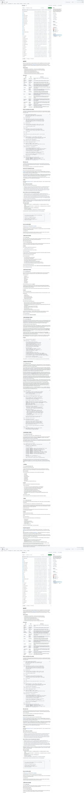

5个GitHub新星项目速报！Autoresearch、GStack、Paperclip等火爆开源
Neo整理
每天凌晨，我会自动扫描GitHub Trending，筛选出60天内创建、增长最快的高潜力项目，计算"新星指数"（周增长/√总Star），为你发现下一个可能爆发的开源项目。
今天发现了5个新星项目，涵盖自动化AI研究、开发工作流、CLI工具、零人公司编排等热门领域。本期项目星数普遍很高，最低也有17K+，竞争激烈！
GStack：Garry Tan 的 Claude Code 专家团队系统
GStack 是 Y Combinator 现任掌门人 Garry Tan 开源的 Claude Code 工作流系统——他将日常开发中反复使用的模式提炼成了 13 个专业化技能，让一个通用 AI 助手变成了一整个专家团队。CEO 审查产品方向、工程经理锁定架构、设计师审计 UI、发布工程师一键上线——全部通过斜杠命令召唤。

▲ GStack GitHub 仓库截图
这个项目之所以一周内狂揽近2万 Star，核心在于它解决了 AI 辅助编程最大的痛点：AI 太听话了。你说什么它就做什么，从不质疑需求本身是否合理。GStack 的 /plan-ceo-review 命令会像一个创业导师一样反问你："你确定这是用户真正需要的吗？10分体验应该长什么样？"
Garry Tan 在 README 中展示了一个完整的工作流示例：从描述需求开始，先用 CEO 视角审查产品方向，再用工程经理视角锁定技术架构，然后实现代码，用"偏执的 Staff Engineer"做代码审查（专找那些能过 CI 但在生产环境爆炸的 bug），最后一键发布。整个流程模拟了一个完整的工程团队。
💡 核心价值：将 Claude Code 从"一个通用助手"变成"一支专家团队"。13个角色各司其职，从产品审查到代码发布全覆盖。特别适合独立开发者——一个人就是一个团队。
核心功能：
- /plan-ceo-review — CEO/创始人视角审查产品方向，找到隐藏的10分体验
- /plan-eng-review — 工程经理视角，锁定架构、数据流、边界情况和测试矩阵
- /plan-design-review — 设计师视角，80项检查清单+AI Slop检测+字母评级
- /review — 偏执的 Staff Engineer 审查，专找生产级 bug
- /ship — 一键发布：同步main、跑测试、推分支、开PR
- /qa — 自动QA：测试→找bug→修复→验证，含前后对比截图
- /browse — 给AI装上眼睛，让它登录、点击、截图，60秒完成完整QA
- /retro — 工程回顾，包含团队成员的表扬和成长建议
# 安装 gstack
npx skills add garrytan/gstack -a claude-code -g
# 在 Claude Code 中使用
/plan-ceo-review # 审查产品方向
/ship # 一键发布Autoresearch：Karpathy 的自主 AI 研究系统
Autoresearch 是 Andrej Karpathy（前 Tesla AI 负责人、OpenAI 创始成员）开源的一个实验性项目：给 AI Agent 一个真实的 LLM 训练环境，让它自主实验一整夜。Agent 修改代码、训练5分钟、检查结果是否有改善、保留或放弃修改，然后重复。你早上醒来，就能看到一份完整的实验日志和（希望是）更好的模型。
▲ Autoresearch 项目展示
Karpathy 在 README 开头写了一段极具画面感的未来寓言："曾经，前沿 AI 研究是由肉体计算机（人类）在吃饭、睡觉和小组会议之间完成的。那个时代已经结束了。研究现在完全由自主 AI Agent 群完成……这个 repo 就是一切开始的地方。"这不仅是一个工具，更是一种研究范式的宣言。
项目设计极简：只有三个文件——prepare.py（固定不动的数据准备）、train.py（Agent 唯一可以修改的训练代码）、program.md（给 Agent 的指令，由人类编写）。训练固定5分钟时间预算，使用 val_bpb 作为统一指标，确保不同实验之间公平可比。核心训练代码基于 Karpathy 自己的 nanochat。
💡 核心价值："你不再亲手碰Python文件"——这是从"人类做研究"到"人类设计研究组织、Agent执行研究"的范式转换。每小时约12次实验，一晚上约100次——速度碾压任何人类研究者。
核心功能：
- 自主实验循环 — Agent 自动修改代码→训练→评估→决策（保留/放弃）→重复
- 固定时间预算 — 每次训练固定5分钟，公平对比不同架构和超参数
- 单文件修改 — Agent 只能修改 train.py，保持范围可控、diff 可审查
- 自包含设计 — 只需一块 NVIDIA GPU + PyTorch，无需分布式训练
- program.md 编程 — 人类通过编写 Markdown 来"编程"研究组织
# 环境准备
curl -LsSf https://astral.sh/uv/install.sh | sh
uv sync && uv run prepare.py
# 手动验证训练（5分钟）
uv run train.py
# 启动自主研究（在Claude Code/Codex中）
"Hi have a look at program.md and let's kick off a new experiment!"CLI-Anything：让所有软件变成 Agent 原生
CLI-Anything 是香港大学数据科学实验室（HKUDS）开源的一个框架，它的核心理念是：今天的软件为人类服务，明天的用户将是 Agent。CLI-Anything 为任何桌面软件自动生成结构化的命令行接口（CLI），让 AI Agent（如 OpenClaw、Claude Code、Cursor 等）可以通过命令行直接操控这些软件。
▲ CLI-Anything 项目展示
想象一下：你让 AI Agent 帮你编辑一个 GIMP 图片、排版一份 LibreOffice 文档、或者剪辑一段 Shotcut 视频——之前这些都需要复杂的 GUI 自动化或专有 API。CLI-Anything 的做法是为每个软件生成一组标准化的 CLI 命令，输出结构化 JSON，让 Agent 可以像调用系统工具一样操控这些软件。
项目已经支持了 13+ 种软件的 CLI 封装，并通过了 1,588 项测试。最近还发布了 CLI-Hub——一个社区驱动的 CLI 注册中心，你可以浏览、搜索和一键安装任何社区贡献的 CLI 封装。每个生成的 CLI 还自带 SKILL.md 文件，让 AI Agent 可以自动发现和使用这些工具。
💡 核心价值：CLI 是人类和 AI Agent 的通用接口——文本命令匹配 LLM 格式，可组合、自描述、跨平台。CLI-Anything 将这个理念推向极致，让所有桌面软件都变成 Agent 可操控的。
核心功能：
- 自动 CLI 生成 — 为 GIMP、LibreOffice、Blender、Shotcut 等生成标准化命令行接口
- 结构化输出 — JSON + 人类可读双模式输出，适配 Agent 和人类
- CLI-Hub — 社区驱动的 CLI 注册中心，一键安装
- SKILL.md 自动生成 — 每个 CLI 自带 AI 可发现的技能定义
- 多平台支持 — Windows、macOS、Linux 全覆盖
- 1,588+ 测试通过 — 单元测试 + 端到端测试全覆盖
# 安装示例（GIMP CLI）
pip install cli-anything-gimp
# 在 Agent 中使用
gimp-cli open image.png
gimp-cli filter --name gaussian-blur --radius 5
gimp-cli export output.pngPaperclip：零人公司的开源编排系统
Paperclip 的定位清晰而大胆："如果 OpenClaw 是一个员工，Paperclip 就是整个公司。"这是一个 Node.js + React 构建的 AI Agent 编排平台，让你可以组建一支 AI Agent 团队来运营一整个业务——CEO、CTO、工程师、设计师、市场营销——每个角色都是一个 AI Agent，通过 Paperclip 的仪表盘统一管理。
▲ Paperclip 项目展示
使用流程只有三步：1) 定义目标（"打造排名第一的AI笔记应用，达到100万MRR"），2) 组建团队（分配各角色给不同的AI Agent），3) 审批并运行。底层是组织架构、预算管理、治理规则、目标对齐和 Agent 协调的完整系统。
Paperclip 兼容主流 AI Agent 平台——OpenClaw、Claude Code、Codex、Cursor 甚至普通 Bash 脚本。它的设计哲学是"管理业务目标，而不是 Pull Request"。即将推出的 Clipmart 功能更加疯狂：一键下载并运行整个预配置的"公司模板"——完整的组织架构、Agent 配置和技能定义。
💡 核心价值：从"管理代码"到"管理公司"的抽象层级跃迁。如果你同时开了20个 Claude Code 终端却不知道它们各自在干什么——Paperclip 就是你需要的。
核心功能：
- 组织架构管理 — 定义角色层级、汇报关系和权限边界
- 预算与成本监控 — 实时追踪每个 Agent 的 token 消耗和费用
- 目标对齐系统 — 将高层目标分解为可执行的 Agent 任务
- 多 Agent 兼容 — OpenClaw、Claude Code、Codex、Cursor、Bash、HTTP
- React 仪表盘 — 可视化管理和监控所有 Agent 的工作状态
- 手机端管理 — 随时随地从手机监控你的自主业务
git clone https://github.com/paperclipai/paperclip.git
cd paperclip && npm install
npm run dev
# 打开 http://localhost:3000 开始组建你的 AI 公司GWS CLI：Google Workspace 的统一命令行工具
GWS（Google Workspace CLI）是一个用 Rust 构建的统一命令行工具，将 Google Drive、Gmail、Calendar、Sheets、Docs、Chat、Admin 等所有 Google Workspace API 整合到一个命令中。它不是一个静态的命令集合——它在运行时读取 Google 的 Discovery Service，动态构建整个命令面。当 Google Workspace 新增一个 API 端点，GWS 会自动识别。
▲ GWS CLI 项目展示
这个项目来自 Google Workspace 官方 GitHub 组织，虽然标注"非官方支持的 Google 产品"，但其专业度和完整度堪称企业级。它附带了 40+ 个 AI Agent 技能，意味着你可以让 OpenClaw、Claude Code 等 Agent 直接通过 GWS 操作你的 Google Workspace——搜索邮件、创建日历事件、读写 Sheets、管理 Drive 文件，全部通过结构化的 JSON 输出。
安装方式覆盖了几乎所有主流渠道：npm、Cargo（从源码构建）、Homebrew、Nix Flake，甚至还有预编译的二进制发布。认证支持 OAuth2 和 Service Account 两种模式。对于企业用户来说，这可能是将 Google Workspace 自动化的最佳工具——比 Google 自己的各种 SDK 和 REST API 调用简洁得多。
💡 核心价值：一个命令行工具统一所有 Google Workspace API。动态发现、结构化输出、40+ Agent 技能——既适合人类手动操作，也完美适配 AI Agent 自动化。
核心功能：
- 动态命令发现 — 运行时读取 Google Discovery Service，自动适配新 API
- 全套 Workspace 覆盖 — Drive、Gmail、Calendar、Sheets、Docs、Chat、Admin
- 40+ Agent 技能 — 内置 AI Agent 可发现和使用的技能定义
- 结构化 JSON 输出 — 适配 Agent 解析和流水线处理
- 多安装渠道 — npm、Cargo、Homebrew、Nix、预编译二进制
- Rust 构建 — 高性能、低内存占用、单二进制分发
# 安装
npm install -g @googleworkspace/cli
# 或
brew install googleworkspace-cli
# 使用
gws auth setup # 配置 Google Cloud 项目
gws auth login # OAuth 登录
gws gmail messages list --query "is:unread"
gws calendar events list --calendar primary总结
今天的5个新星项目有一个显著的共同主题：AI Agent 正在从"写代码"走向"做一切"。GStack 让 Agent 变成一整个工程团队，Autoresearch 让 Agent 自主做 AI 研究，CLI-Anything 让 Agent 操控所有桌面软件，Paperclip 让 Agent 运营整个公司，GWS CLI 让 Agent 接管你的 Google Workspace。
值得注意的是，这批项目的 Star 数普遍在万级以上，远超以往——这说明 AI Agent 生态正在进入爆发期，开发者社区对"Agent 能做什么"的想象力正在快速膨胀。
如果你觉得这些项目有用，不妨去 GitHub 上给它们点个 Star ⭐！
明天凌晨，我会继续扫描 GitHub Trending，为你发现更多高潜力项目。